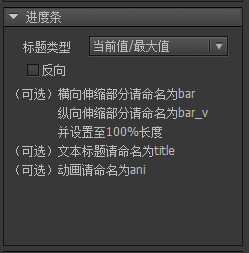
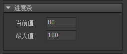
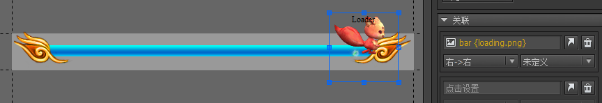

赞助
Guide
Guide

进度条
进度条的原理很简单，就是按进度改变一个元件的宽度、高度或填充比例。进度条分为两种，横向和纵向的。
创建进度条
可以通过两种方式创建进度条组件。
- 点击主菜单“资源”->“新建进度条”，然后按照向导的提示一步步完成。

- 新建一个组件，然后在组件属性里选择扩展为“进度条”。
设计属性
在组件编辑状态下，进度条组件的属性面板是：

标题类型如果组件内有名称为“title”的元件，则进度条可以显示一个表达当前进度的文字。百分比显示当前进度的百分比，例如“88%”。当前值/最大值例如“50/100”。当前值例如“50”。最大值例如“10000”。
反向
对于横向的进度条，一般来说，进度越大，伸缩条越向右延伸，如果是反向的，则伸缩条右边缘固定，进度越大，伸缩条越往左延伸。- 对于纵向的进度条，一般来说，进度越大，伸缩条越向下延伸，如果是反向的，则伸缩条底边缘固定，进度越大，伸缩条越往上延伸。
比较以下两个进度条，第一个是正常的进度条，第二个是反向的。
命名约定
bar当进度改变时，改变“bar”对象的宽度。一般用于横向的进度条。注意：一定要设置bar对象的宽度为进度条处于最大值时的宽度。
“bar”元件可以是任何类型，不限制于图片。
特别的，如果“bar”对象是具有特殊填充模式的图片或者装载器，进度改变时，将改变它的填充比例，而不是宽度。
bar_v当进度改变时，改变“bar_v”对象的高度。一般用于纵向的进度条。注意：一定要设置bar_v对象的高度为进度条处于最大值时的高度。
“bar_v”元件可以是任何类型，不限制于图片。
特别的，如果“bar_v”对象是具有特殊填充模式的图片或者装载器，进度改变时，将改变它的填充比例，而不是宽度。
title可以是装载器，也可以是标签、按钮。用于显示进度的标题。显示的内容由“标题类型”决定。ani是一个动画对象。当进度改变时，修改动画的帧索引等于进度值（0-100）。
可以利用关联做出效果更丰富的进度条组件，例如下面这个进度条，会动的小松鼠建立了一个和bar部件“右->右”的关联，这样当进度变化时，小松鼠也跟着动了。

实例属性
在舞台上选中一个进度条组件，右边的属性面板列表出现：

当前值当前进度。最大值最大进度值。
GProgressBar
|